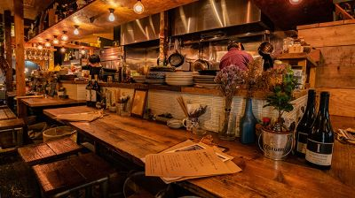
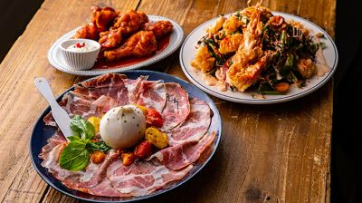

<!DOCTYPE html>
<html lang="ja">

<head>
	<meta charset="utf-8">
	<title>東中野ホームページ</title>
	<link href="../css/style.css" rel="stylesheet">

</head>
<body>
	<div id="wrapper">
		<div id="header">
			<h1 align="center"></h1>
		<ul id="menu">
			<li id="home"><a href="../index.html" title="ホームページ">ホーム</a></li>
			<li id="italy link"><a href=""　title="イタリアン">イタリアン</a>
			<!-- href未作成　挿入忘れずに-->
				<ul id="abc">
					<a href="../italy/seasons.html">4season</a>
					<a href="../italy/barudining.html">BARU&DINING　笑笑</a>
					<a href="../italy/rombo.html">ROMBO</a>
					<a href="../italy/garden.html">グラッチェガーデンズ</a>
					<a href="../italy/pagora.html">パーゴラ</a>
					<a href="../italy/piza.html">ピッツェリア　チーロ</a>
					<a href="../italy/bisutoro.html">ビストロ　グラート</a>
					<a href="../italy/perubakko.html">ペルバッコ</a>
					<a href="../italy/reable.html">リエーブル</a>
				</ul>
			</li>

			<li id="japan link"><a href="" title="和食">和食</a>
			<!-- href未作成　挿入忘れずに-->
				<ul id="abc">
					<a href="unagi.html">うなぎ串焼き　くりから</a>
					<a href="kemutei.html">けむっ亭</a>
					<a href="simomiya.html">しもみや</a>
					<a href="ippai.html">ちょいと一杯</a>
					<a href="torijiro.html">鶏ジロー　東中野店</a>
					<a href="kissen.html">粋鮮</a>
					<a href="toutou.html">東灯</a>
					<a href="nabe.html">博多もつ鍋　よかさん房</a>
					<a href="wabisutoro.html">和びすとろ　ぶり中野</a>
				</ul>
			</li>

			<li id="outside link"><a href="" title="その他">その他</a>
				<ul id="abc">
					<a href="">外部リンク</a>
					<a href="">メンバー紹介</a>	
				</ul>
			</li>
		</ul>	
		</div>
		

					<!--end div=header-->
			<div id ="footer">		
				<h1>東灯</h1>
			<div id="left">
				
				<p></p>
				<p></p>
				<p><iframe src="https://www.google.com/maps/embed?pb=!1m18!1m12!1m3!1d3239.688373681384!2d139.6789815152596!3d35.70928548018762!2m3!1f0!2f0!3f0!3m2!1i1024!2i768!4f13.1!3m3!1m2!1s0x6018f2b781ef6885%3A0xb930605e24aa8e4a!2z5p2x54Gv77yI44Go44GG44Go44GG77yJ!5e0!3m2!1sja!2sjp!4v1568093563363!5m2!1sja!2sjp" width="350" height="400" frameborder="0" style="border:0;" allowfullscreen=""></iframe></p>
				
			</div>
					<!--end div=left-->
			<div id="right">
						
				<p>大山こむぎを使った手づくりピザと市場直送のシーフード。大胆リノベ空間で気持ちよくわいわい。
東中野駅西口から徒歩5分。曲がりくねった商店街を抜ける角地にあたたかい明かりがこぼれます。
店名の「東灯」には東中野の街の灯になりたいという想いをこめました。
中野のマグロ専門店「マグロマート」の姉妹店でもある当店は、シーフードとピザを中心に、
食材にこだわったオリジナリティある料理、
そしてリーズナブルな価格でご提供する様々なお酒が人気です。
（プレモル生は380円！）どんどん普段使いしてください。
</p>

				<dl>
					<dt>予約・問い合わせ</dt>
						<dd>050-5596-8275</dd>
					<dt>営業時間</dt>
						<dd>17:00～23:30
					<br>
					（土曜日は11:30~23:30）
					（日曜日は11:30~23:00）
					<br>
					日曜営業
					<br>
					定休日
					<br>
					不定休
						</dd>
					<dt>メニュー</dt>
						<dd>
					飲み放題コース
					<br>
					飲み放題、4000円～5000円の飲み放題コース					<br>
					ドリンク
					<br>
					日本酒あり、焼酎あり、ワインあり、カクテルあり、日本酒にこだわる、ワインにこだわる
					<br>
					料理
					<br>
					魚料理にこだわる

					</dd>
					</dt>
				</dl>
		</div>
			<!--end div=right-->
	</div>
			<!--end div=footer-->
</div>
			<!--end div=wrapper-->					

</body>
</html>